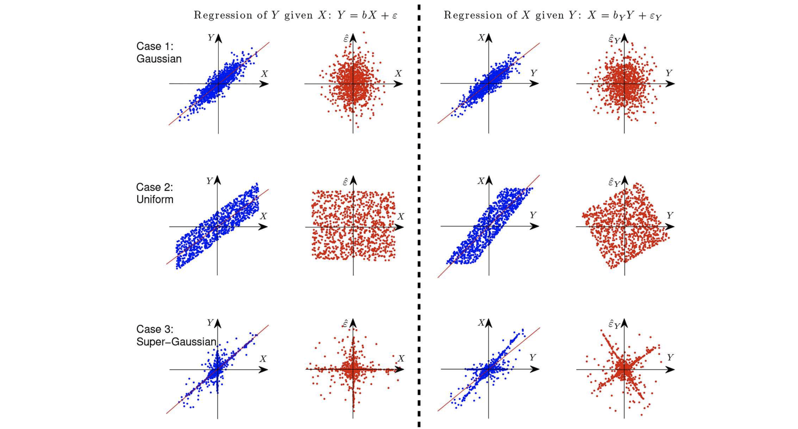

1. Introduction: The Limits of Correlation
- 인과 추론(Causal Inference)에서 가장 근본적인 질문 중 하나는 “상관관계는 인과관계가 아니다”라는 명제에서 출발합니다.
- 두 변수 \(X\)와 \(Y\)가 통계적으로 종속되어 있을 때, 우리는 이것이 \(X \to Y\) 때문인지, \(Y \to X\) 때문인지, 혹은 잠재적 교란 변수(confounder) 때문인지 데이터만으로는 완벽하게 구분하기 어렵습니다.
- 기존의 Constraint-based approach (예: PC algorithm)는 조건부 독립성 검정(Conditional Independence Test)을 통해 인과 그래프의 뼈대(Skeleton)와 V-structure를 찾아내지만, Markov Equivalence Class에 속하는 그래프들(같은 조건부 독립성을 가지는 그래프들) 사이에서는 방향을 결정할 수 없다는 한계가 있습니다.
- 이번 포스트에서는 이러한 한계를 극복하기 위해 함수적 인과 모델(Functional Causal Models, FCM)을 다룹니다.
- 이 방법론들은 데이터 생성 과정(Data Generating Process)에 대한 추가적인 가정(비선형성 또는 비정규성)을 도입하여, \(X \to Y\)와 \(Y \to X\)의 비대칭성(Asymmetry)을 찾아냅니다.
2. Additive Noise Models (ANM)
Identifiability via ANM
- 변수의 분포가 비가우시안(Non-Gaussian)이거나 함수가 비선형(Non-linear)인 경우, 우리는 인과관계의 방향을 식별할 수 있습니다.
- 이를 이해하기 위해 두 변수 \(X, Y\)에 대한 가법 잡음 모델(Additive Noise Model, ANM)을 살펴봅시다.
\[y = f_y(x) + u_y \quad \text{where} \quad x \perp\!\!\perp u_y\]
- 핵심 아이디어는 “올바른 인과 방향으로 모델을 적합하면 잔차(Residual)가 원인 변수와 독립이지만, 반대 방향으로 적합하면 독립성이 깨진다”는 것입니다.

3. \(F(x)\) is Non-Linear

가설 검증 프로세스
- 만약 실제 데이터 생성 과정이 \(X \to Y\)라면, 우리는 데이터를 양방향으로 피팅해보고 독립성 검정을 통해 방향을 결정할 수 있습니다.
1. Hypothesis 1 (Forward: \(X \to Y\)):
- \(y = \hat{f}(x) + \hat{u}_y\) 로 회귀분석을 수행합니다.
- 잔차 \(\hat{u}_y\)와 입력 \(x\)의 독립성을 검정합니다.
- 결과: 독립성이 성립합니다 (\(x \perp\!\!\perp \hat{u}_y\)).
2. Hypothesis 2 (Backward: \(Y \to X\)):
- 반대로 \(x = \hat{g}(y) + \hat{u}_x\) 로 회귀분석을 수행합니다.
- 이 경우, \(f\)가 비선형이라면 수학적으로 잔차 \(\hat{u}_x\)가 \(y\)와 얽히게 됩니다.
- 결과: 독립성이 기각됩니다 (\(y \not\perp\!\!\!\perp \hat{u}_x\)).
왜 이런 현상이 발생하나요?
- 위 그림의 오른쪽 경우를 보면, 우리가 억지로 \(Y \to X\) 모델을 만들었지만, 실제 데이터 \(Y\)는 \(X\)와 \(U_y\)의 결합으로 만들어졌습니다.
- 따라서 \(Y\)를 설명변수로 사용하여 \(X\)를 예측하려 하면, 남은 잔차(\(U_x\)) 안에 \(Y\)에 대한 정보가 섞여 들어갈 수밖에 없습니다.
- 이를 “정보의 누수(Information Leakage)” 또는 “비대칭성(Asymmetry)”이라고 합니다.
Algorithm
- ANM을 이용한 인과 발견 알고리즘은 다음과 같이 수행됩니다:
- Fit Forward: 데이터 \((x_i, y_i)\)에 대해 \(y\)를 \(x\)의 함수로 회귀분석하여 \(\hat{f}_y\)를 구합니다.
- Compute Residuals: \(\hat{u}_y = y - \hat{f}_y(x)\)를 계산합니다.
- Test Independence: \(\hat{u}_y\)와 \(x\)가 독립인지 검정합니다.
- Fit Backward: 반대로 \(x\)를 \(y\)의 함수로 회귀분석하여 \(\hat{f}_x\)를 구하고, 잔차 \(\hat{u}_x = x - \hat{f}_x(y)\)를 계산합니다.
- Test Independence: \(\hat{u}_x\)와 \(y\)가 독립인지 검정합니다.
- Decide: 한쪽 방향만 독립성이 성립하면 그 방향을 인과 방향으로 채택합니다.
Extension: Post-Nonlinear (PNL) Model
- ANM은 관측된 변수에 노이즈가 직접 더해진다고 가정합니다. 이를 더 일반화한 것이 Post-Nonlinear Model (PNL)입니다.
\[x_2 = f_2(f_1(x_1) + e_2)\]
- 여기서 \(f_2\)는 역함수가 존재하는(invertible) 함수라고 가정합니다. 이 경우 노이즈 \(e_2\)는 다음과 같이 표현됩니다:
\[e_2 = f_2^{-1}(x_2) - f_1(x_1)\]
- 이 모델의 식별(Identifiability)은 \(x_1\)과 추정된 잔차 \(\hat{e}_2\) 사이의 상호정보량(Mutual Information)을 최소화하는 문제, 즉 Constrained Nonlinear ICA 문제로 귀결됩니다.
\[I(x_1, \hat{e}_2) = -\mathbb{E}\log p_{\hat{e}_2}(\hat{e}_2) - \mathbb{E}\log|l'_2(x_2)| + H(x_1) - H(x_1, x_2)\]
- 여기서 \(l_2\)는 \(f_2^{-1}\)에 대응하는 함수입니다. Zhang and Hyvarinen (2009)은 아주 특수한 경우를 제외하고는 PNL 모델이 식별 가능함을 보였습니다.
4. \(F(x)\) is Linear, but \(U_Y\) is Non-Gaussian
- 함수 형태가 선형(Linear)이라도, 잡음의 분포가 비정규분포(Non-Gaussian)라면 인과 방향을 식별할 수 있습니다.
Why Non-Gaussian?
선형 모델 \(Y = bX + \epsilon\)과 \(X = b_Y Y + \epsilon_Y\)를 생각해 봅시다.
만약 \(X\)와 \(\epsilon\)이 모두 Gaussian(정규분포)이라면, 결합 분포 \(P(X, Y)\)는 다변량 정규분포가 됩니다.
다변량 정규분포는 대칭적인 타원 형태를 띠기 때문에, \(X\)축을 기준으로 보나 \(Y\)축을 기준으로 보나 구조적 차이를 발견할 수 없습니다.
즉, Gaussian case는 식별 불가능(Unidentifiable)합니다.
하지만 변수들이 Non-Gaussian(예: Uniform, Super-Gaussian)이라면 이야기가 달라집니다.
결합 분포의 형태가 한쪽 방향으로는 독립성을 유지하지만, 역방향으로는 찌그러지거나 종속적인 패턴을 보이게 됩니다.

Cramer’s Decomposition Theorem
- LiNGAM(Linear Non-Gaussian Acyclic Model)이 왜 작동하는지, 그리고 왜 데이터가 반드시 비정규분포(Non-Gaussian)여야 하는지를 이해하기 위해서는 Cramer의 분해 정리를 먼저 알아야 합니다.
1. The Theorem
- 하랄드 크라메르(Harald Cramér, 1936)가 증명한 이 정리는 다음과 같습니다.
- 가정: 두 개의 독립적인(independent) 확률변수 \(X\)와 \(Y\)가 있습니다.
- 조건: 만약 이 둘의 합인 확률변수 \(Z = X + Y\)가 정규분포(Gaussian Distribution)를 따른다면,
- 결론: \(X\)와 \(Y\) 또한 반드시 정규분포를 따라야 합니다.
\[ X \perp\!\!\!\perp Y \quad \text{and} \quad (X + Y) \sim \mathcal{N} \implies X \sim \mathcal{N}, \quad Y \sim \mathcal{N} \]
2. Implication for Causal Discovery (핵심 의미)
이 정리는 인과추론, 특히 구조 식별성(Identifiability) 관점에서 매우 중요한 시사점을 가집니다.
대우 명제 (Contrapositive):
- “만약 \(X\)와 \(Y\) 중 하나라도 비정규분포(Non-Gaussian)라면, 그 합 \(X+Y\)는 결코 (완벽한) 정규분포가 될 수 없다.”
왜 LiNGAM에서 중요한가?
- 선형 모델 \(E = C + N\) (결과 = 원인 + 노이즈)에서, 만약 원인(\(C\))과 노이즈(\(N\))가 모두 정규분포라면, 결과(\(E\))도 정규분포가 됩니다.
- 이 경우, 역방향 모델 \(C = E - N\)을 만들어도 모든 변수가 정규분포이므로, 수학적으로 정방향과 역방향을 구별할 수 없습니다 (Unidentifiable).
- 하지만 비정규분포 데이터라면, 이 정리에 의해 결합 분포의 모양이 찌그러지거나 뾰족해지는 등 고유한 특징이 남게 되어 방향 식별이 가능해집니다.
Linear Non-Gaussian Acyclic Models (LiNGAM)
Mathematical Formulation
LiNGAM은 전체 변수들의 관계를 선형 연립방정식 형태의 행렬로 모델링합니다.
변수 벡터를 \(x = [x_1, \dots, x_p]^T\),
인접 행렬(Adjacency Matrix)을 \(B\),
외생 잡음(Exogenous Noise) 벡터를 \(e = [e_1, \dots, e_p]^T\)라고 할 때:
\[x = Bx + e\]
- 이 식을 \(x\)에 대해 정리하면 다음과 같이 표현할 수 있습니다.
\[(I - B)x = e \implies x = (I - B)^{-1}e\]
- 여기서 가장 중요한 특징은, 변수들을 인과적 순서(Topological Order)대로 재배열하면 행렬 \(B\)가 순수 하삼각 행렬(Strictly Lower Triangular Matrix)이 된다는 점입니다.
Example: 3-Variable DAG Representation
- 이를 예시를 통해 살펴봅시다.
- 다음과 같은 간단한 인과 구조 (\(x_1 \to x_2 \to x_3\), 그리고 \(x_1 \to x_3\))를 가정해 봅시다.

변수들이 위상학적 순서(Topological Order)인 \(x_1, x_2, x_3\) 순으로 정렬되어 있다고 가정하고, 다음과 같은 인과 구조를 생각해 봅시다.
- \(x_1 \rightarrow x_2\)
- \(x_1 \rightarrow x_3\)
- \(x_2 \rightarrow x_3\)
이 그래프를 구조방정식(Structural Equation)으로 하나씩 풀어서 쓰면 다음과 같습니다.
- \(x_1\): 부모 변수가 없으므로, 외생 잡음(Error term)만으로 결정됩니다. \[x_1 = e_1\]
- \(x_2\): \(x_1\)의 영향을 받습니다. \[x_2 = b_{21}x_1 + e_2\]
- \(x_3\): \(x_1\)과 \(x_2\) 모두의 영향을 받습니다. \[x_3 = b_{31}x_1 + b_{32}x_2 + e_3\]
이제 이 연립방정식을 행렬 (\(x = Bx + e\)) 형태로 한 번에 묶어서 표현해 보겠습니다.
\[ \underbrace{\begin{bmatrix} x_1 \\ x_2 \\ x_3 \end{bmatrix}}_{x} = \underbrace{\begin{bmatrix} 0 & 0 & 0 \\ b_{21} & 0 & 0 \\ b_{31} & b_{32} & 0 \end{bmatrix}}_{B} \underbrace{\begin{bmatrix} x_1 \\ x_2 \\ x_3 \end{bmatrix}}_{x} + \underbrace{\begin{bmatrix} e_1 \\ e_2 \\ e_3 \end{bmatrix}}_{e} \]
행렬 \(B\)의 구조적 특징 (Strictly Lower Triangular):
대각 성분 0 (\(B_{ii} = 0\)): 자기 자신에게 영향을 주는 \(x_i \to x_i\) (Self-loop)가 없음을 의미합니다.
대각 윗부분 0 (\(B_{ij} = 0 \text{ where } j > i\)): 순서상 뒤에 있는 변수가 앞에 있는 변수의 원인이 되지 않음(No Cycle)을 의미합니다.
이러한 형태 덕분에 \(\det(I-B) = 1\)이 되어, \(I-B\)는 항상 역행렬을 가집니다.
The ICA Connection (The “Trick”)
- 위에서 유도한 식 \(x = (I - B)^{-1}e\)를 자세히 보면, 이는 신호 처리 분야의 독립 성분 분석(Independent Component Analysis, ICA) 문제와 수학적으로 완전히 동일한 구조입니다.
1. ICA와의 매핑 (Mapping)
- ICA는 관측된 신호 \(x\)가 “서로 독립인 원천 신호 \(s\)”들의 선형 결합(\(x = As\))으로 이루어져 있다고 가정하고, 역으로 \(s\)와 \(A\)를 찾아냅니다.
- LiNGAM은 이 프레임워크를 인과추론에 그대로 가져옵니다.
| ICA Concept | LiNGAM Mapping | 의미 |
|---|---|---|
| Observed Signals (\(x\)) | Data (\(x\)) | 우리가 관측한 변수들 (원인과 결과가 섞여 있음) |
| Source Signals (\(s\)) | Error Terms (\(e\)) | 외생 잡음 (서로 독립이어야 함, \(e_i \perp e_j\)) |
| Mixing Matrix (\(A\)) | \((I - B)^{-1}\) | 원인이 결과에 섞여 들어가는 인과적 메커니즘 |
2. ICA의 한계와 LiNGAM의 해결책 (Identifiability)
일반적인 ICA 알고리즘(FastICA 등)을 돌리면 Unmixing Matrix \(W\) (즉, \(A\)의 역행렬)를 얻게 됩니다.
이상적으로는 \(W\)가 \(I-B\)와 같아야 합니다 (\(e = Wx\)).
일반적인 ICA 알고리즘을 통해 얻은 Unmixing Matrix \(W\)는 \(I-B\)와 유사하지만, 두 가지 고유한 불확정성(Indeterminacy)이 존재합니다.
- 순서 불확정 (Permutation): 원천 신호의 순서를 알 수 없습니다. (\(e_1, e_2\)의 순서가 바뀔 수 있음) \[W_{ICA} = P \cdot (I-B)\]
- 스케일 불확정 (Scaling): 신호의 크기를 알 수 없습니다. (\(e_1\)인지 \(2e_1\)인지 모름) \[W_{ICA} = S \cdot (I-B)\]
LiNGAM은 “DAG 구조”라는 제약을 이용해 이 문제를 해결합니다.
\(B\)가 Strictly Lower Triangular Matrix가 되도록 행과 열을 재배열(Permutation)하고, 대각 성분이 1이 되도록 크기(Scaling)를 조정합니다.
이 과정을 통해 유일한 인과 그래프 \(B\)를 복원할 수 있습니다.
왜 비정규분포(Non-Gaussian)여야 하나요?
- 만약 데이터(오차항)가 정규분포(Gaussian)를 따른다면, Mixing Matrix \(A\)를 회전(Rotation)시켜도 분포가 똑같은 원 모양이라 구별할 수 없습니다.
- 데이터가 찌그러져 있는 등 비정규적 특징이 있어야만 축을 찾아서 역산을 수행할 수 있습니다. 이것이 LiNGAM의 핵심 가정입니다.
3. Concrete Example (Matrix Calculation)
이해를 돕기 위해 2변수 인과관계 \(X_1 \to X_2\)를 가정해 봅시다.
- True Model: \[ \begin{bmatrix} x_1 \\ x_2 \end{bmatrix} = \underbrace{\begin{bmatrix} 1 & 0 \\ 0.5 & 1 \end{bmatrix}}_{(I-B)^{-1}} \begin{bmatrix} e_1 \\ e_2 \end{bmatrix} \]
- 여기서 \(B = \begin{bmatrix} 0 & 0 \\ 0.5 & 0 \end{bmatrix}\) 입니다.
- ICA Result (\(W_{ICA}\)):
- ICA 알고리즘은 순서와 스케일이 뒤섞인 행렬을 반환할 수 있습니다. 예를 들어: \[ W_{ICA} \approx \begin{bmatrix} -0.5 & 1 \\ 2 & 0 \end{bmatrix} \]
- 이 상태로는 \(I-B\) 처럼 보이지 않습니다.
- Permutation & Scaling (LiNGAM Step):
Row Permutation: 두 번째 행(\([2, 0]\))이 \(x_1\)에 해당하고, 첫 번째 행(\([-0.5, 1]\))이 \(x_2\)에 해당하도록 순서를 바꿉니다. \[\rightarrow \begin{bmatrix} 2 & 0 \\ -0.5 & 1 \end{bmatrix}\]
Scaling: 대각 성분을 1로 맞추기 위해 첫 행을 2로 나눕니다. \[\rightarrow \begin{bmatrix} 1 & 0 \\ -0.5 & 1 \end{bmatrix}\]
이제 이 행렬은 \(I - B\) 형태가 되었습니다.
여기서 \(B\)를 추출하면 \(b_{21} = 0.5\), 즉 \(X_1 \to X_2\) 관계를 찾아낼 수 있습니다.
LiNGAM Algorithm Steps
- Shimizu (2006)가 제안한 LiNGAM 알고리즘의 핵심 단계는 다음과 같습니다:
- ICA Execution: 데이터 행렬 \(X\)에 대해 ICA를 수행하여 \(X = W_{ICA}^{-1} S\) 꼴의 분해를 얻습니다. 여기서 \(S\)는 독립 성분(오차항 추정치)입니다.
- Permutation & Scaling: ICA는 성분의 순서(Permutation)와 스케일(Scaling)을 결정하지 못하는 불확정성이 있습니다.
- \(W_{ICA}\)의 행을 재배열(Permute)하고 스케일링하여, 대각 성분이 모두 0이 아닌 행렬 \(\tilde{W}\)를 만듭니다.
- LiNGAM의 가정(\(x = Bx + e\))에 맞추기 위해, \(I - B\) 형태가 되도록 정규화합니다.
- Recover B: 최종적으로 \(B = I - W_{final}\)을 계산합니다.
- Causal Order: \(B\)가 하삼각행렬(Lower Triangular)에 가깝도록 변수 순서를 재배열하면 인과 순서(Causal Order)를 얻을 수 있습니다.

5. Score-based Approaches
- 마지막으로, 최적화(Optimization) 관점에서 인과 구조를 찾는 접근법이 있습니다.
- 이는 적절한 점수 함수(Score function) \(L(f)\)를 정의하고, 이를 최소화하는 DAG 구조를 찾는 것입니다.
\[\min_{f} L(f) \quad \text{subject to} \quad \mathcal{G}(f) \in \text{DAG}\]
Score Matching and Leaf Identification
Montagna et al. (2023)은 Score Matching 기법을 사용하여 잎 노드(Leaf node, 자식이 없는 노드)를 식별하는 방법을 제안했습니다.
Key Idea: ANM \(X_i = f_i(PA_i) + N_i\) 에서, 어떤 노드 \(X_i\)가 Leaf라면, 해당 노드의 잡음 \(N_i\)는 해당 노드의 점수 함수(Score function, \(\nabla \log p(X)\))와 직접적인 관련이 있습니다.
구체적으로, \(X_i\)가 Leaf일 필요충분조건은 다음과 관련된 기댓값이 0이 되는 것입니다: \[X_i \text{ is a leaf} \iff \mathbb{E}[(h^*(R_i) - s_i(X))^2] = 0\]
- 여기서 \(s_i(X)\)는 Score function의 성분이며, \(R_i\)는 회귀 잔차입니다.
이 성질을 이용하면 전체 그래프에서 Leaf를 하나씩 찾아 제거(peeling)해 나가는 방식으로 인과 순서(Topological Sort)를 복원할 수 있습니다.
6. Summary
- 이번 포스트에서는 조건부 독립성만으로는 해결할 수 없는 인과 방향 식별 문제를 해결하기 위한 함수적 인과 모델(Functional Causal Models)을 살펴보았습니다.
| 모델 | 가정 (Assumption) | 핵심 원리 (Key Principle) | 식별 근거 |
|---|---|---|---|
| ANM | \(Y = f(X) + U\) | 비선형 함수 (Nonlinear \(f\)) | 잔차의 독립성 비대칭 |
| PNL | \(Y = f_2(f_1(X) + E)\) | 비선형성 + 가역 함수 | Constrained Nonlinear ICA |
| LiNGAM | \(Y = bX + U\) | 선형성 + Non-Gaussian 잡음 | ICA를 통한 Mixing Matrix 복원 |
- 이 방법론들은 “데이터의 분포적 형태(Distributional Shape)” 정보까지 활용하여 인과관계를 더 깊이 파고든다는 점에서 강력합니다.